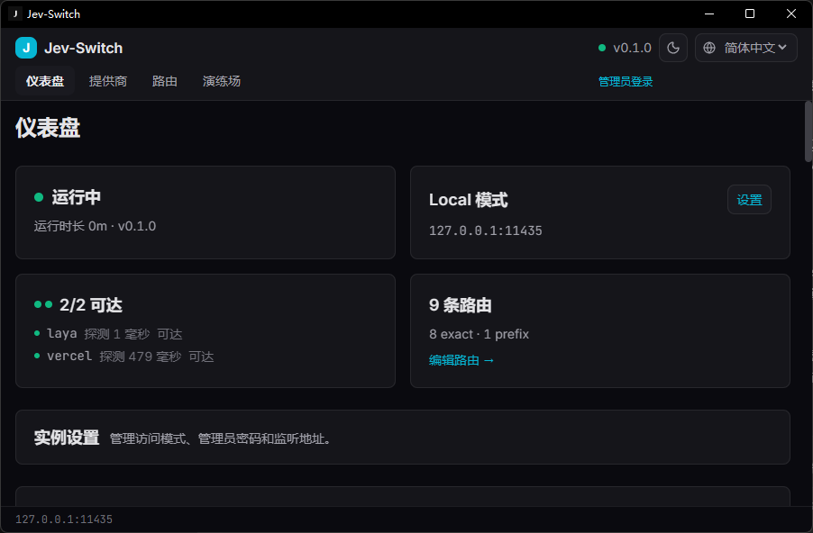
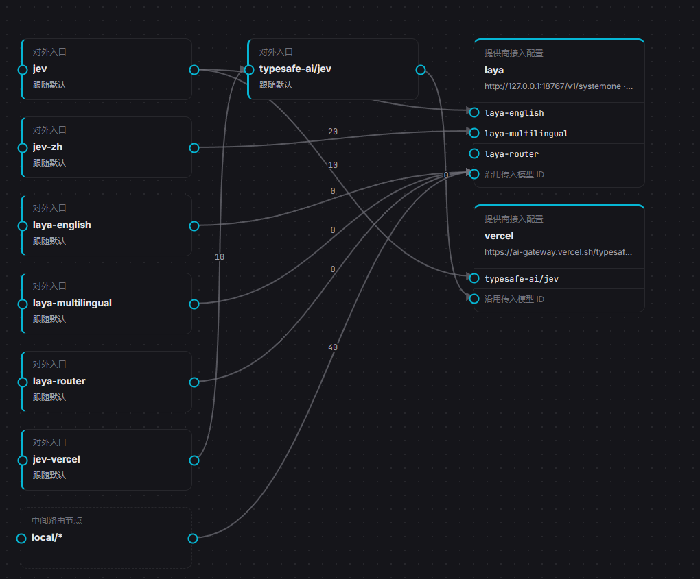
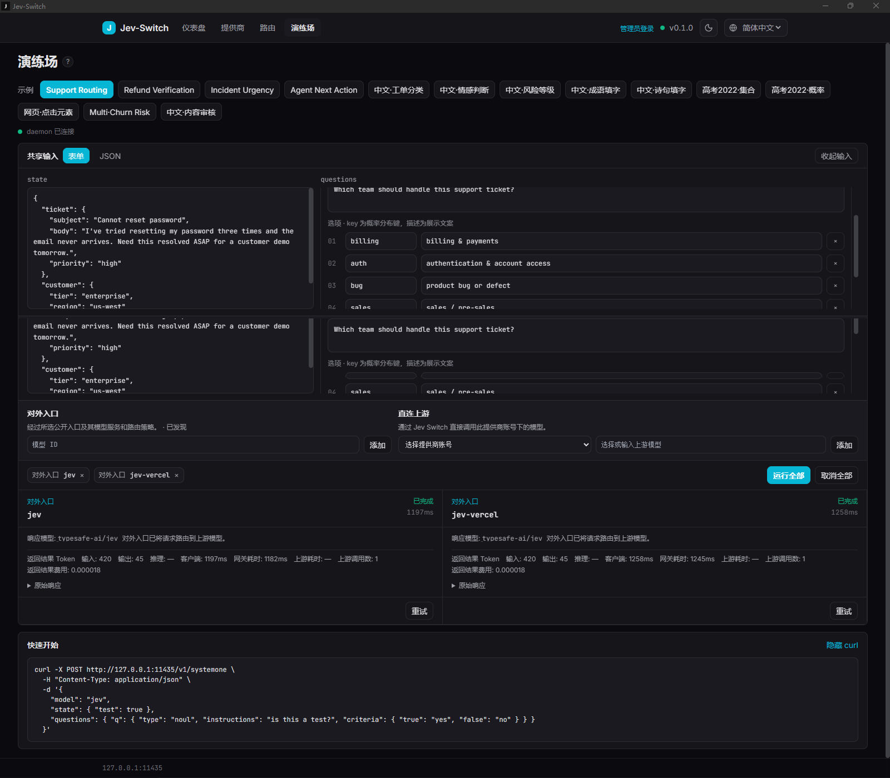

快速本地调试
靠近工具运行，区分网关耗时与上游耗时，模型推理由上游承担。
JEV 模型网关 · Windows / Android / Docker / CLI
用一个对外入口连接可复用提供商，沿可编辑 DAG 路由请求，并在响应后看清真实路径、耗时与结果。
Jev 原生 /v1/systemone · 本地或云端 · 密钥留在后端
THE POINT
靠近工具运行，区分网关耗时与上游耗时，模型推理由上游承担。
入口、提供商、模型端口与 failover 边清楚可见，直连只是最小 DAG。
浏览器、历史、截图与公开文档只看到脱敏状态。
A WORKING CONSOLE
仪表盘遥测、左到右路由图、演练场横向比较和结构化历史把关键事实放到动作旁边。



截图需要随正式候选版本翻新；当前图册仍是历史素材。
DOWNLOAD
版本和附件由 GitHub Release 自动同步；实验性平台会明确标注边界。